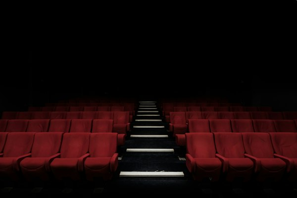

O Cinema e as Grandes Telas

O cinema continua sendo a experiência suprema de imersão narrativa. Com o avanço das projeções a laser e sistemas de som tridimensional como Dolby Atmos, assistir a um longa-metragem tornou-se um espetáculo sensorial único para os amantes da sétima arte.